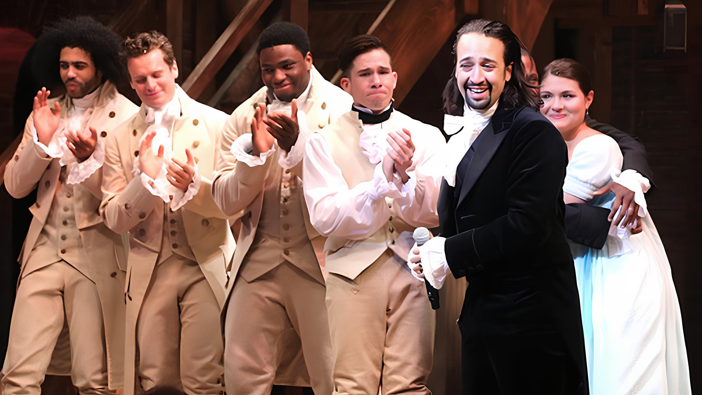

Por Trás do Fenômeno: Os Bastidores de Hamilton
Por Gretzel Kattia - 6 de março de 2024
No universo teatral, poucas produções alcançaram o fenômeno global que é "Hamilton". Mas o que está por trás desse sucesso estrondoso? Como um musical sobre a história americana do século XVIII conseguiu conquistar o coração do público moderno de maneira tão rápida e intensa?
Os bastidores de "Hamilton" revelam uma combinação única de elementos que contribuíram para sua notoriedade. Em primeiro lugar, a visão visionária de Lin-Manuel Miranda, criador e protagonista, é uma peça fundamental desse quebra-cabeça. Sua decisão de contar a história dos pais fundadores dos Estados Unidos através de uma trilha sonora que mistura hip-hop, R&B e estilos tradicionais de teatro musical foi ousada e inovadora.
A diversidade do elenco, escolhido para refletir a riqueza multicultural da América moderna, também desempenhou um papel crucial. Ao representar figuras históricas com atores de diferentes origens étnicas, o musical quebrou barreiras e proporcionou uma identificação mais ampla, conectando-se com audiências de diversas origens.
A intensidade da performance e a habilidade de Lin-Manuel Miranda como letrista e compositor são inegáveis. As letras ágeis, repletas de referências históricas e cultura pop, cativaram tanto os amantes de música quanto os aficionados por história.
A rápida ascensão de "Hamilton" também foi impulsionada pelas mídias sociais e pela disseminação boca a boca. O boca a boca online, combinado com a disponibilidade da trilha sonora, permitiu que o público se envolvesse mesmo sem ter a oportunidade de assistir ao espetáculo ao vivo.
Além disso, o timing do lançamento, coincidindo com um momento em que as discussões sobre diversidade e inclusão estavam ganhando força, contribuiu para a relevância imediata do musical.
Em resumo, os bastidores de "Hamilton" são uma mistura de visão criativa, talento excepcional, inclusão consciente e um toque de sorte no timing. Este musical não apenas quebrou as barreiras do teatro convencional, mas também se tornou um fenômeno cultural que continuará a ser estudado e apreciado por gerações vindouras.